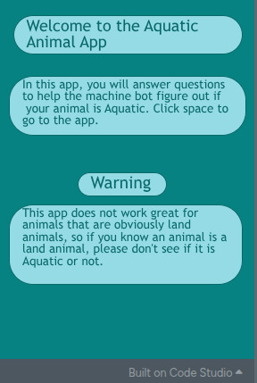
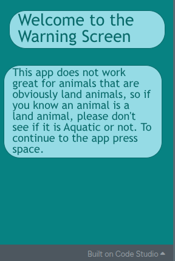

Technology Impact and Responsibility
The Issue
The technological issue I will be talking about is AI Bias.
Who Is Affected
Many times, AI is biased toward lower-income users.
One Benefit
One benefit of AI is that it can make human tasks easier and more efficient.
One Tradeoff
A real tradeoff is that it loses accuracy for cost and speed.
One Responsibility Creators or Users Have
One responsibility technology creators have is to try and make AI not biased because if AI is biased, then minorities will be treated differently compared to the majority.
Revision Evidence
What I Improved
I revised the is the Animal Aquatic or Not project.
What It Looked Like Before

What I Changed
I added a separate warning screen instead of having the warning on the start screen.
What It Looks Like Now

Why the New Version Is Better
This revision improves the project because it emphasizes the problem with the app and ensures that users know what some setbacks may be.
What This Revision Proves About My Growth
This revision shows that I have become a creator who cares more about the accuracy for my users instead of a creator who cares about the time it may take.